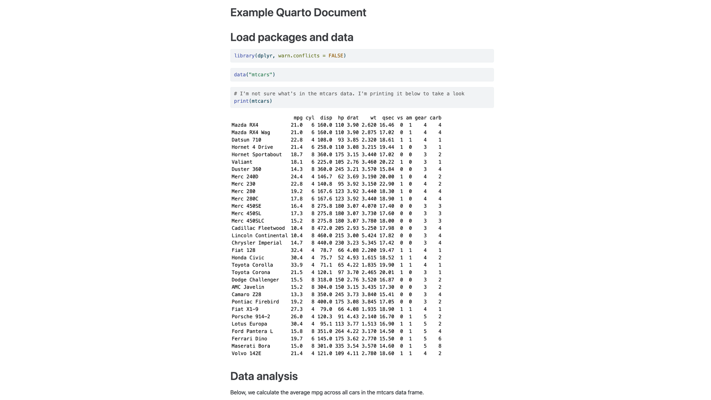
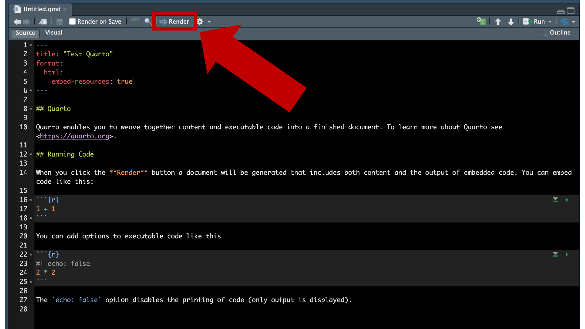

8 Quarto/ files
In the R Scripts chapter, you learned how to create R scripts – plain text files that contain R code and comments. These R scripts are kind of a big deal because they give us a simple and effective tool for saving, modifying, and sharing our R code. If it weren’t for the existence of Quarto/ files, we would probably do all of the coding in this book using R scripts. However, Quarto/ files do exist and they are AWESOME! So, we’re going to suggest that you use them instead of R scripts the majority of the time.
It’s actually kind of difficult for us to describe what a Quarto/file is if you’ve never seen or heard of one before. Therefore, we’re going to start with an example and work backwards from there. Figure fig-example-Quarto/ below is a Quarto/file. It includes the exact same R code and comments as the example we saw in Figure fig-example-script in the previous chapter.
Click here to download the Quarto/file
Notice that the results are embedded directly in the Quarto/file immediately below the R code (e.g., between lines 21 and 22)!
Once rendered, the Quarto/file creates the HTML file you see below in Figure fig-rendered-preview. HTML files are what websites are made out of, and we’ll walk you through how to create them from Quarto/ files later in this chapter.

Click here to download the rendered HTML file.
Notice how everything is nicely formatted and easy to read!
When you create Quarto/ files on your computer, as in Figure fig-Quarto/-files, the rendered HTML file is saved in the same folder by default.

In Figure fig-Quarto/-files above, the HTML file is highlighted with a red box and ends with the .html file extension. The Quarto/file is below the HTML file and ends with the .qmd file extension. Both of these files can be modified, saved, and shared with others.
Warning
⚠️Warning: HTML documents often require supporting files (e.g., images, CSS style sheets, and JavaScript scripts) to produce the final formatted output you see in the Figure fig-rendered-preview. Notice that we used the embed-resources: true option in our yaml header (yaml headers are described in more detail below). Including that option makes it possible for us to send a single HTML file to others with all the supporting files embedded. Please see the Quarto/documentation for more information about HTML document options.
8.1 What is Quarto/ ?
There are literally entire websites and books about Quarto/. Therefore, we’re only going to hit some of the highlights in this chapter. As a starting point, you can think of Quarto/ files as being a mix of R scripts, the R console, and a Microsoft Word or Google Doc document. We say this because:
The R code that you would otherwise write in R scripts is written in R code chunks when you use Quarto/ files. In Figure fig-example-Quarto/ there are R code chunks at lines 10 to 12, 14 to 16, 18 to 21, 27 to 29, and 33 to 35.
Instead of having to flip back and forth between your source pane and your console (or viewer) pane in RStudio, the results from your R code are embedded directly in the Quarto/file – directly below the code that generated them. In Figure fig-example-Quarto/ there are embedded results between lines 21 and 22, between lines 29 and 30, and between lines 35 and 36 (not fully visible).
When creating a document in Microsoft Word or Google Docs, you may format text headings to help organize your document, you may format your text to emphasize certain words, you may add tables to help organize concepts or data, you may add links to other resources, and you may add pictures or charts to help you clearly communicate ideas to yourself or others. Similarly, Quarto/ files allow you to surround your R code with formatted text, tables, links, pictures, and charts directly in your document.
Even when we don’t share our Quarto/ files with anyone else, we find that the added functionality described above really helps us organize our data analysis more effectively and helps us understand what we were doing if we come back to the analysis at some point in the future.
But, Quarto/really shines when we do want to share our analysis or results with others. To get an idea of what we’re talking about, please take a look at the Quarto/gallery and view some of the amazing things you can do with Quarto/. As you can see there, Quarto/ files mix R code with other kinds of text and media to create documents, websites, presentations, and more. In fact, the book you are reading right now is created with Quarto/ files!
8.2 Why use Quarto/ ?
At this point, you may be thinking “Ok, that Quarto/gallery has some cool stuff, but it also looks complicated. Why shouldn’t I just use a basic R script for the little R program I’m writing?” If that’s what you’re thinking, you have a valid point. Quarto/ files are slightly more complicated than basic R scripts. However, after reading the sections below, we think you will find that getting started with Quarto/doesn’t have to be super complicated and the benefits provided make the initial investment in learning Quarto/worth your time.
8.3 Create a Quarto/file
RStudio makes it very easy to create your own Quarto/file, of which there are several types. In this chapter, we’re going to show you how to create a Quarto/file that can be rendered to an HTML file and viewed in your web browser.
The process is actually really similar to the process we used to create an R script. Start by clicking on the icon shown below in Figure fig-new-Quarto/-document-01.

As before, we’ll be presented with a dropdown box that lists a bunch of different file types for us to choose from. This time, we’ll click Quarto/Document instead of R script. Figure fig-new-Quarto/-document-02

Next, a dialogue box will pop up with some options for us. For now, we will just give our Quarto/document a super creative title – “Text Quarto/ ” – and make sure the default HTML format is selected. Finally, we will click the Create button in the bottom right-hand corner of the dialogue box.

A new Quarto/file will appear in the RStudio source pane after we click the Create button. This Quarto/file includes some example text and code meant to help us get started. We are typically going to erase all the example stuff and write our own text and code, but Figure fig-new-Quarto/-document-04 highlights some key components of Quarto/ files for now.

First, notice lines 1 through 6 in the example above. These lines make up something called the YAML header (pronounced yamel). It isn’t important for us to know what YAML means, but we do need to know that this is one of the defining features of Quarto/ files. We’ll talk more about the details of the YAML header soon.
Second, notice lines 16 through 18. These lines make up something called an R code chunk. Code chunks in Quarto/ files always start with three backticks ( ` ) and a pair of curly braces ({}), and they always end with three more backticks. We know that this code chunk contains R code because of the “r” inside of the curly braces. We can also create code chunks that will run other languages (e.g., python), but we won’t do that in this book. You can think of each R code chunk as a mini R script. We’ll talk more about the details of code chunks soon.
Third, all of the other text is called Markdown. In Figure fig-new-Quarto/-document-04 above, the markdown text is just filler text with some basic instructions for users. In a real project we would use formatted text like this to add context around our code. For now, you can think of this as being very similar to the comments we wrote in our R scripts, but markdown allows us to do lots of cool things that the comments in our R scripts aren’t able to do. For example, line 6 has a link to a website embedded in it, line 8 includes a heading (i.e., ## Quarto/ ), and line 14 includes text that is being formatted (the orange text surrounded by two asterisks). In this case, the text is being bolded.
And that is all we have to do to create a basic Quarto/file. Next, we’re going to give you a few more details about each of the key components of the Quarto/file that we briefly introduced above.
8.4 YAML headers
The YAML header is unlike anything we’ve seen before. The YAML header always begins and ends with dash-dash-dash (---) typed on its own line (1 & 6 in Figure fig-new-Quarto/-document-04). The code written inside the YAML header generally falls into two categories:
Values to be rendered in the Quarto/file. For example, in Figure fig-new-Quarto/-document-04 we told Quarto/to title our document “Test Quarto/ ”. The title is added to the file by adding the
titlekeyword, followed by a colon (:), followed by a character string wrapped in quotes. Examples of other values we could have added includeauthoranddate.Instructions that tell Quarto/how to process the file. What do we mean by that? Well, remember the Quarto/gallery you saw earlier? That gallery includes Word documents, PDF documents, websites, and more. But all of those different document types started as Quarto/file similar to the one in Figure fig-new-Quarto/-document-04. Quarto/will create a PDF document, a Word document, or a website from the Quarto/file based, in part, on the instructions we give it inside the YAML header. For example, the YAML header in Figure fig-new-Quarto/-document-04 tells Quarto/to create an HTML file from our Quarto/file. This output type is selected by adding the
formatkeyword, followed by a colon (:), followed by thehtmlkeyword. Further, we added theembed-resources: trueoption to our HTML format. Including that option makes it possible for us to send a single HTML file to others with all the supporting files embedded.
What does an HTML file look like? Well, if you hit the Render button in RStudio:

R will ask you to save your Quarto/file. After you save it, R will automatically create (or render) a new HTML file and save it in the same location where your Quarto/file is saved. Additionally, a little browser window, like Figure fig-rendered-Quarto/-document will pop up and give you a preview of what the rendered HTML file looks like.

Notice all the formatting that was applied when R rendered the HTML file. For example, the title – “Test Quarto/ ” – is in big bold letters at the top of the screen, The headings – Quarto/ and Running code – are also written in a large bold font with a faint line underneath them, the link to the Quarto/website is now blue and clickable, and the word “Render” is written in bold font.
We can imagine that this section may seem a little confusing to some readers right now. If so, don’t worry. You don’t really need to understand the YAML header at this point. Remember, when you create a new Quarto/file in the manner we described above, the YAML header is already there. You will probably want to change the title, but that may be the only change you make for now.
8.5 R code chunks
As we said above, R code chunks always start out with three backticks ( ` ) and a pair of curly braces ({}) with an “r” in them ({r}), and they always end with three more backticks. Typing that over and over can be tedious, so RStudio provides a keyboard shortcut for inserting R code chunks into our Quarto/ files.
On MacOS type option + command + i.
On Windows type control + alt + i
Inside the code chunk, we can type anything that we would otherwise type in the console or in an R script – including comments. We can then click the little green arrow in the top right corner of the code chunk to submit it to R and see the result (see the play button in Figure fig-new-Quarto/-document-04).
Alternatively, we can run the code in the code chunk by typing shift + command + return on MacOS or shift + control + enter on Windows. If we want to submit a small section of code in a code chunk, as opposed to all of the code in the code chunk, we can use our mouse to highlight just the section of code we want to run and type control + return on MacOS or control + enter on Windows. There are also options to run all code chunks in the Quarto/file, all code chunks above the current code chunk, and all code chunks below the current chunk. You can access these, and other, run options using the Run button in the top right-hand corner of the Quarto/file in RStudio (see Figure fig-Quarto/-run-code-chunks below).

8.6 Markdown
Many readers have probably heard of HTML and CSS before. HTML stands for hypertext markup language and CSS stands for cascading style sheets. Together, HTML and CSS are used to create and style every website you’ve ever seen. HTML files created from our Quarto/ files are no different. They will open in any web browser and behave just like any other website. Therefore, we can manipulate and style them using HTML and CSS just like any other website. However, it takes most people a lot of time and effort to learn HTML and CSS. So, markdown was created as an easier-to-use alternative. Think of it as HTML and CSS lite. It can’t fully replace HTML and CSS, but it is much easier to learn, and you can use it to do many of the main things you might want to do with HTML and CSS. For example, Figure fig-new-Quarto/-document-04 and Figure fig-rendered-Quarto/-document we saw that wrapping our text with two asterisks (**) bolds it.
There are a ton of other things we can do with markdown, and we recommend checking out Quarto/ ’s markdown basics website to learn more. The website covers a lot and may feel overwhelming at first. So, we suggest just play around with some of the formatting options and get a feel for what they do. Having said that, it’s totally fine if you don’t try to tackle learning markdown syntax right now. You don’t really need markdown to follow along with the rest of the book. However, we still suggest using Quarto/ files for writing, saving, modifying, and sharing your R code.
8.6.1 Markdown headings
While we are discussing markdown, we would like to call special attention to markdown headings. We briefly glazed over them above, but we find that beginning R users typically benefit from a slightly more detailed discussion. Think back to the ## Quarto/ on line 8 of Figure fig-new-Quarto/-document-04. This markdown created a heading – text that stands out and breaks our document up into sections. We can create headings by beginning a line in our Quarto/document with one or more hash symbols (#), followed by a space, and then our heading text. Headings can be nested underneath each other in the same way you might nest topics in a bulleted list. For example:
- Animals
- Dog
- Lab
- Yorkie
- Cat
- Dog
- Plants
- Flowers
- Trees
- Oak
Nesting list items this way organizes our list and conveys information that would otherwise require explicitly writing out more text. For example, that a lab is a type of dog and that dogs are a type of animal. Thoughtfully nesting our headings in our Quarto/ files can have similar benefits. So, how do we nest our headings? Great question! Quarto/and RStudio will automatically nest them based on the number of hash symbols we use (between 1 and 6). In the example above, ## Quarto/ it is a second-level heading. We know this because the line begins with two hash symbols. Figure fig-Quarto/-headings below shows how we might organize a Quarto/file for a data analysis project into nested sections using markdown headings.
A really important benefit of organizing our Quarto/file this way is that it allows us to use RStudio’s document outline pane to quickly navigate around our Quarto/file. In this trivial example, it isn’t such a big deal. But it can be a huge time saver in a Quarto/file with hundreds, or thousands, of lines of code.

As a final note on markdown headings, we find that new R users sometimes mix up comments and headings. This is a really understandable mistake to make because both start with the hash symbol. So, how do you know when typing a hash symbol will create a comment and when it will create a heading?
The hash symbol always creates comments in R scripts. R scripts don’t understand markdown. Therefore, they don’t have markdown headings. R scripts only understand comments, which begin with a hash symbol, and R code.
The hash symbol always creates markdown headings in Quarto/ files when typed outside of an R code chunk. Remember, everything in between the R code chunks in our Quarto/ files is considered markdown by Quarto/ , and hash symbols create headings in the markdown language.
The hash symbol always creates comments in Quarto/ files when typed inside of an R code chunk. Remember, we can think of each R code chunk as a mini R script, and in R scripts, hash symbols create comments.
8.7 Summary
Quarto/ files bring together R code, formatted text, and media in a single file. We can use them to make our lives easier when working on small projects that are just for us, and we can use them to create large complex documents, websites, and applications that are intended for much larger audiences. RStudio makes it easy for us to create and render Quarto/ files into many different document types, and learning a little bit of markdown can help us format those documents really nicely. We believe that Quarto/ files are a great default file type to use for most projects and we encourage readers to review the Quarto/website for more details (and inspiration)!